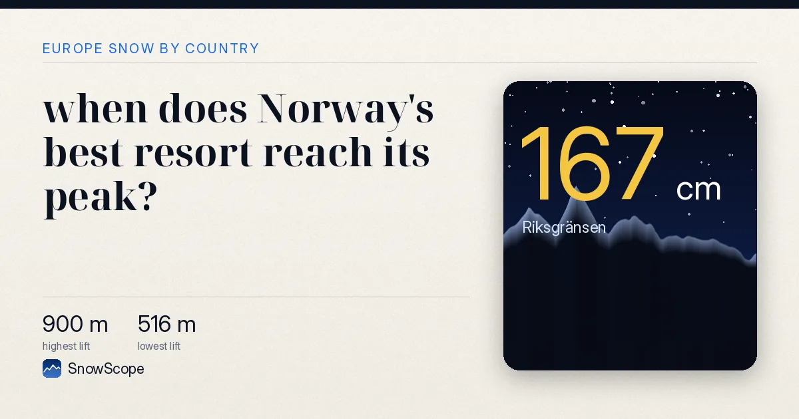
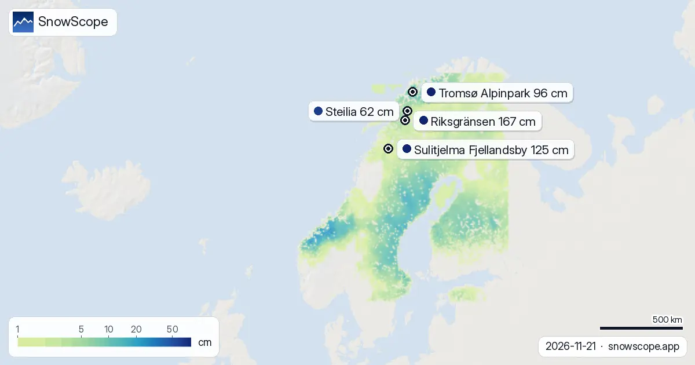

Riksgränsen 167 cm: when does Norway's best resort reach its peak?
When is the best time to ski Riksgränsen? The resort sits at 167 cm today, but late March and mid-April are normally when snow depth peaks in Norway's far north.
See the live snow forecast for Riksgränsen in the SnowScope appSnow depth, powder alerts and the 3D map, free.
Riksgränsen today versus its seasonal peak
Riksgränsen holds 167 cm at 900 m elevation, putting it at 94 percent of the depth typical for late November. The resort sits 105 cm above where it was seven days ago—a solid gain. But snow depth here does not peak until weeks 15 and 16, which fall in late March and mid-April. That means the reservoir of snow stored above the resort will grow for several months as mountain precipitation accumulates through winter.
To understand when Riksgränsen is at its best, think of the snowpack as water storage. Early season snow at low elevation melts more easily; snow falling from December onward stays longer. Week 15 typically brings 97 cm at this site—the high point of the season. So today's 167 cm is a strong start, but it is early in the winter.
| Resort | Today | Normal for the date | Share of normal |
|---|---|---|---|
| Riksgränsen | 58 cm | 62 cm | 94 % |
| Sulitjelma Fjellandsby | 48 cm | 54 cm | 89 % |
| Tromsø Alpinpark | 23 cm | 38 cm | 61 % |
| Steilia | 33 cm | 60 cm | 55 % |
| Galdhøpiggen Sommerskisenter | 30 cm | 86 cm | 35 % |

Norway's snow compared to normal for now
Across the whole country, snow covers 260,290 km2—about 92 percent of the region. That is a 5 percent gain from seven days ago. The northern resorts hold the most reliable snow: Riksgränsen leads at 167 cm, while Sulitjelma Fjellandsby sits at 125 cm. Tromsø Alpinpark, at lower elevation, holds 96 cm but has picked up 13 cm in the last three days. Steilia and Galdhøpiggen Sommerskisenter are still building their snowpack at 62 cm and 59 cm respectively, which is well below their late-November average.
Only 149 of Norway's 155 resorts have measurable snow today. The bare ground at the lowest resorts reflects the season: snow will come and go at low elevation until stable winter snow arrives.

Where is the snow deepest now?
Snow depth increases with elevation. Below 500 m, the average is just 9 cm and cover is 86 percent. At 500 to 1,000 m, mean depth rises to 19 cm with 98 percent cover. Above 1,000 m, snow is reliable: at 1,500 to 2,000 m the average is 30 cm with complete cover, and above 2,000 m it reaches 40 cm. This pattern tells a water story: the highest ground captures the most precipitation and loses the least to melting. Trollheimen and Jotunheimen have been the snowiest areas in the past 72 hours, collecting 36 cm and 27 cm respectively. These mountains hold the season's water reserve.
What comes next: the next two weeks
The next three days will bring up to 15 cm across Norway. After that, the forecast widens: the seven-day outlook suggests up to 26 cm is possible. By early December (8 to 14 December), conditions shift: the second week of that period could see as much as 38 cm accumulate. This is when the winter snowpack truly locks in.
Riksgränsen can expect 5 cm in the next three days and another 11 cm by late November. These gains will push the snowpack deeper, moving the resort closer to conditions that support skiing throughout the season.
The trend: a wet week followed by growth
Six days ago, Riksgränsen held 173 cm and the country's snow cover was 246,310 km2. Through the past week, snow came and went—the peak fall was 55 cm across a wide area on 16 November. By yesterday, the country had grown to 260,290 km2 of cover and Riksgränsen sat at the same 167 cm today. The dip in depth at the summit resort masks what has happened at lower elevations: snow cover nationwide has jumped by 13,980 km2 in a week. The water is there; it is redistributing across the mountains as the season settles.
What this means for water in the mountains
Early-season snow is fragile. At elevations below 1,000 m, partial snow cover and thin depths mean that melting and refreezing will shape the pack week to week. But above 1,500 m, the snow is now nearly complete and 30 to 40 cm deep—water that will stay through winter. As November turns to December and temperatures drop further, the low-elevation snow will stabilize too. By the time Riksgränsen reaches weeks 15 and 16, the full winter reservoir will be in place. For now, watch the high mountains: Trollheimen and Jotunheimen are where the winter's water is gathering.
Tips for skiers
- Riksgränsen at 167 cm is skiable now, but expect variable conditions below 1,000 m. Focus on runs above that height where snow cover is reliable and depth stable.
- If heading to lower resorts such as Steilia or Galdhøpiggen in the next week, expect thin coverage and exposed rocks or grass. Wait until after late November when fresh snow is forecast.
- The best ski window for most of Norway is mid-March to mid-April (weeks 14 to 16). Plan trips for then if seeking peak conditions and deepest snow.
- Rain and melt can occur at any time below 500 m through winter. Check local conditions daily and avoid early descents in marginal weather.
- Before venturing off-piste, check the official avalanche bulletin for your region and your chosen terrain.
About these numbers
Resort snow depths are the deepest snow on the resort's upper slopes on the date shown; they are estimates for an area, not a measurement at one point. Forecasts can change. Always read the official avalanche bulletin before going off-piste.
Cite this report
For research, teaching or the press: the numbers and charts are free to reuse under CC BY 4.0 with this citation.
SnowScope (2026), Riksgränsen 167 cm: when does Norway's best resort reach its peak?, https://snowscope.app/blog/en/2026/11/norway-when-to-book-ski-trip-21-november-2026.html, accessed 2026-11-21
SnowScope (Atlas Labs). (2026, November 21). Riksgränsen 167 cm: when does Norway's best resort reach its peak?. SnowScope snow reports. https://snowscope.app/blog/en/2026/11/norway-when-to-book-ski-trip-21-november-2026.html
BibTeX
@misc{snowscope2026norwaywhentobookskitrip2,
author = {{SnowScope (Atlas Labs)}},
title = {Riksgränsen 167 cm: when does Norway's best resort reach its peak?},
year = {2026},
month = nov,
howpublished = {\url{https://snowscope.app/blog/en/2026/11/norway-when-to-book-ski-trip-21-november-2026.html}},
note = {Published 2026-11-21 13:21 UTC; accessed 2026-11-21}
}· CC BY 4.0 · Methods, data and tools →
Riksgränsen: snow and temperature by height, this winter vs last (tools) →
Follow Riksgränsen
Free: a message when fresh snow is coming, and the forecast every morning.
More snow reports

Only Borovets and Bansko have a trace of snow at the top today, 2 cm each. A week ago Borovets had 11 cm. Day by day, and the one snowy day in the forecast.

Snow is falling on Slovenia's ski mountains today: about 37 cm on Kanin and 21 cm on Krvavec. Where the snow lies, how it compares with past winters, and the next snowy day.

Tornik on Zlatibor had up to 39 cm on its upper slopes on 15 November 2026; by Wednesday it had melted. Kopaonik barely turned white. The week day by day and what comes next.